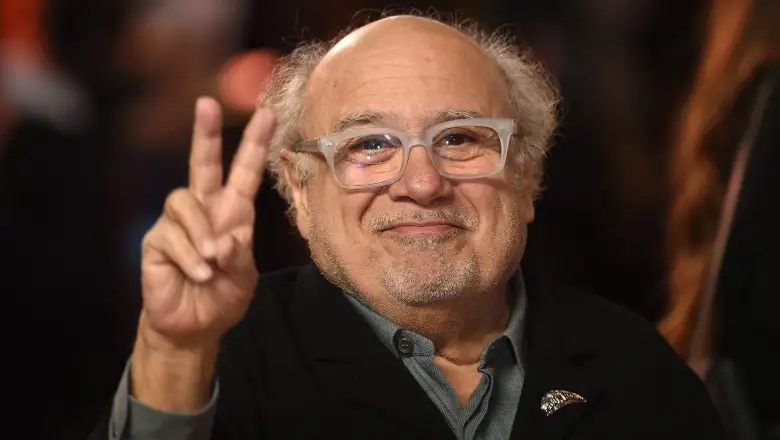

Danny Devito Bio
Daniel Michael DeVito Jr. (born November 17, 1944) is an American actor, comedian, and filmmaker. He gained prominence for his portrayal of the taxi dispatcher Louie De Palma in the television series Taxi (1978–1983), which won him a Golden Globe Award and an Emmy Award. He plays Frank Reynolds on the FX and FXX sitcom It's Always Sunny in Philadelphia (2006–present).
He is known for his film roles in One Flew Over the Cuckoo's Nest (1975), Terms of Endearment (1983), Romancing the Stone (1984), Throw Momma from the Train (1987), Twins (1988), The War of the Roses (1989), Batman Returns (1992), Jack the Bear (1993), Junior (1994), Get Shorty (1995), Matilda (1996), L.A. Confidential (1997), The Big Kahuna (1999), Big Fish (2003), Deck the Halls (2006), When in Rome (2010), Wiener-Dog (2016) and Jumanji: The Next Level (2019). He is also known for his voice roles in such films as Hercules (1997), The Lorax (2012) and Smallfoot (2018).
In 2017, he earned a Tony Award nomination for Best Featured Actor in a Play for his performance in the Broadway revival of Arthur Miller's The Price. DeVito and Michael Shamberg founded Jersey Films. Soon afterwards, Stacey Sher became an equal partner. The production company is known for films such as Pulp Fiction, Garden State, and Freedom Writers. DeVito also owned Jersey Television, which produced the Comedy Central series Reno 911!. DeVito and wife Rhea Perlman starred together in his 1996 film Matilda, based on Roald Dahl's children's novel. DeVito was also one of the producers nominated for an Academy Award for Best Picture for Erin Brockovich (2000).
Danny Devito's Best Works
-
#5
Deck the Halls

[1] -
#4
Heist

[2] -
#3
The War of the Roses

[3] -
#2
Batman Returns

[4] -
#1
The Lorax

[5]
-
tab item 1
- [1] Retrieved from: https://www.imdb.com/title/tt0790604/
- [2] Retrieved from: https://www.imdb.com/title/tt0252503/?ref_=ttls_li_i
- [3] Retrieved from: https://www.imdb.com/title/tt0098621/?ref_=ttls_li_tti
- [4] Retrieved from: https://www.imdb.com/title/tt0103776/?ref_=ttls_li_tt
- [5] Retrieved from: https://www.imdb.com/title/tt1482459/?ref_=ttls_li_tt